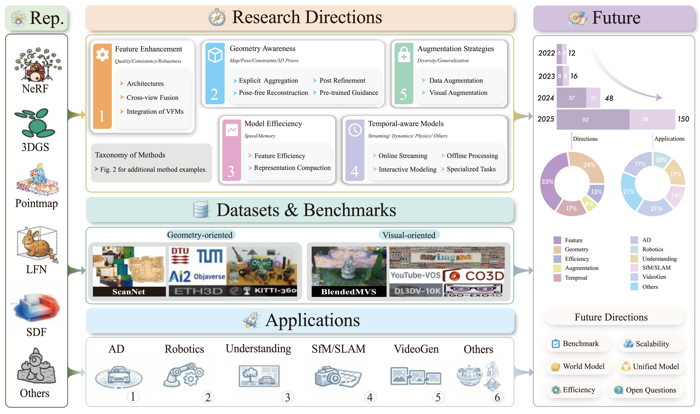
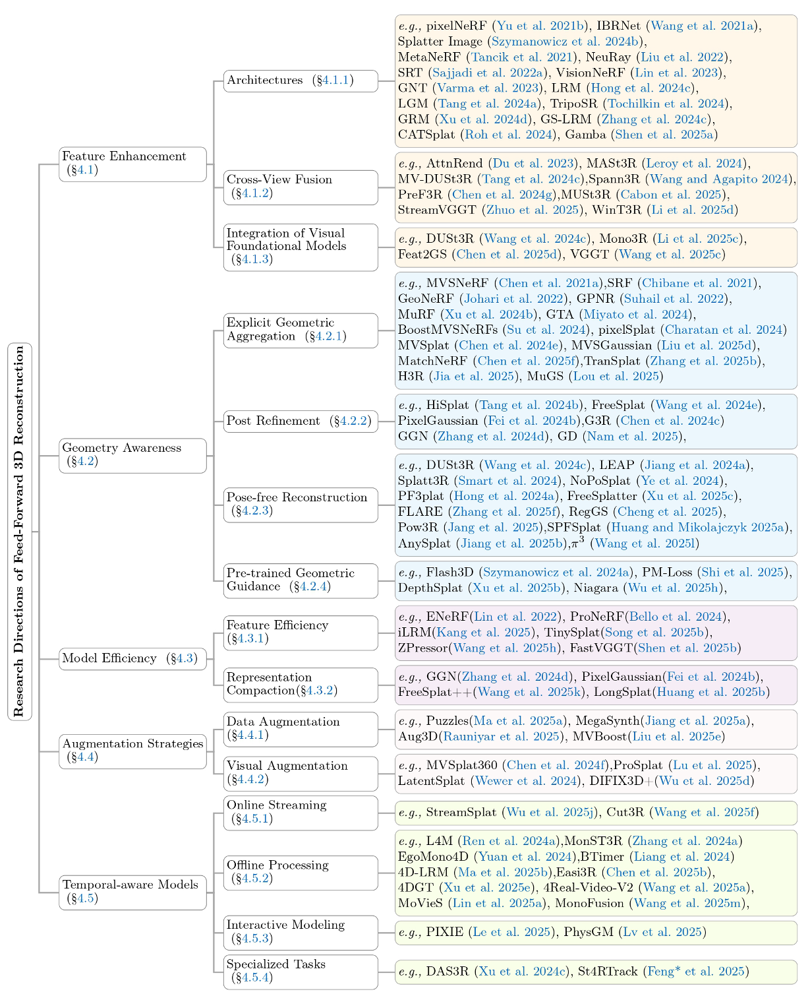
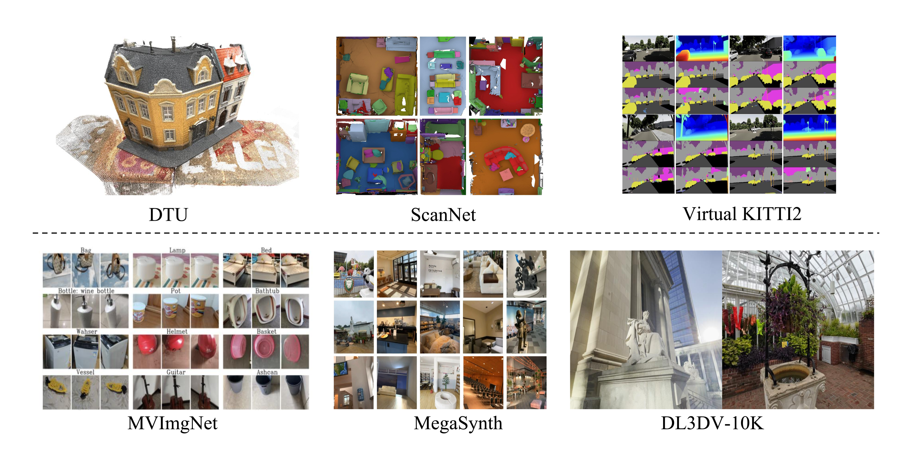
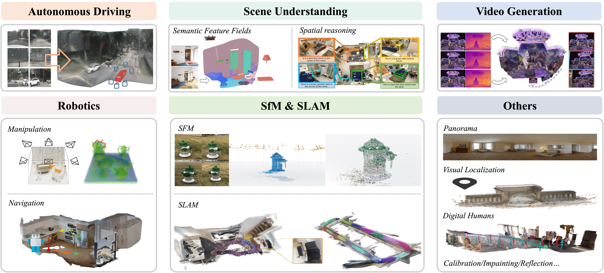

Feed-Forward 3D Scene Modeling
A Problem-Driven Perspective
1Zhejiang University 2Nanyang Technological University 3Monash University 4ETH Zurich 5University of Tübingen, Tübingen AI Center
Survey Statistics
Overview
Feed-forward 3D scene modeling replaces per-scene optimization with direct inference from images. This project page summarizes the survey through a problem-driven taxonomy, covering feature enhancement, geometry-aware improvement, efficiency, augmentation, temporal modeling, datasets, and applications.

Overview of the survey scope and organization.
Citation
If you find this survey useful, please consider citing it.
@misc{wang2026feedforward,
title={Feed-Forward 3D Scene Modeling: A Problem-Driven Perspective},
author={Wang, Weijie and Cao, Qihang and Gao, Sensen and Chen, Donny Y. and Xu, Haofei and Bian, Wenjing and Peng, Songyou and Cham, Tat-Jen and Zheng, Chuanxia and Geiger, Andreas and Cai, Jianfei and Bian, Jiawang and Zhuang, Bohan},
year={2026},
doi={10.13140/RG.2.2.33299.85287},
url={https://www.researchgate.net/publication/403843361_Feed-Forward_3D_Scene_Modeling_A_Problem-Driven_Perspective}
}Interactive Taxonomy
The survey organizes feed-forward 3D methods by the core problems they solve rather than only by representation.

Problem-driven taxonomy of feed-forward 3D scene modeling.
Directions
The current survey emphasizes a challenge-driven perspective: stronger implicit features, geometry awareness, model efficiency, augmentation strategies, and temporal consistency.

Direction Taxonomy Overview.
Direction Summary
Feature Enhancement
Representative methods: PixelNeRF, IBRNet, SRT, DUSt3R, MASt3R, iLRM, Dens3r, MoRE, Uni3R.
Geometry Awareness
Representative methods: MVSNeRF, GeoNeRF, MuRF, pixelSplat, MVSplat, HiSplat, AnySplat, YoNoSplat.
Model Efficiency
Representative methods: ENeRF, ProNeRF, ZPressor, Long-LRM, FastVGGT, LiteVGGT, Speed3R, SR3R.
Augmentation Strategies
Representative methods: Puzzles, MegaSynth, Aug3D, MVBoost, MVSplat360, latentSplat, ProSplat.
Temporal-aware Models
Representative methods: StreamSplat, CUT3R, Stream3R, LongStream, MonST3R, 4DGT, MoVieS, DAS3R.
Datasets
The survey revisits datasets from a new perspective, distinguishing geometry-oriented and visual-oriented resources, while also covering a broad mixed category used in practice.

Dataset landscape used in the survey.
Dataset Groups
Geometry-Oriented
Examples: DTU, 7-Scenes, ETH3D, ScanNet, ScanNet++, ARKitScenes, Waymo, nuScenes.
Visual-Oriented
Examples: NeRF-Synthetic, ACID, LLFF, RealEstate10K, DL3DV-10K, Mip-NeRF 360, Neural3DV.
Mixed
Examples: GSO, OmniObject3D, CO3D, WildRGBD, ShapeNet, MVImgNet, Objaverse-XL, Hypersim.
Benchmark Takeaways
- DTU 3-view NVS remains a common small-view benchmark for generalizable rendering methods.
- RealEstate10K is a standard large-scale benchmark for sparse-view feed-forward 3D reconstruction.
- Pointmap and pose evaluation is increasingly important alongside novel-view rendering quality.
Applications
Feed-forward 3D scene modeling is increasingly used in downstream systems that need fast, robust, and geometry-aware inference without per-scene optimization.

Application landscape summarized in the survey.
Application Areas
Autonomous Driving
Representative methods: SCube, InfiniCube, STORM, Driv3R, DrivingRecon, DrivingForward, EVolSplat, WorldSplat.
Robotics
Representative methods: GraspNeRF, ManiGaussian, GAF, GaussianGrasper, EmbodiedSplat, UnitedVLN, VR-Robo, IGL-Nav.
SfM & SLAM
Representative methods: VGGSfM, Light3R-SfM, MASt3R-SLAM, SLAM3R, VGGT-SLAM, ARTDECO, ViSTA-SLAM.
Scene Understanding
Representative methods: SLGaussian, SemanticSplat, AlignGS, 3DRS, Spatial-MLLM, VG-LLM, VLM-3R.
Video Generation
Representative methods: MVSplat360, JOG3R, GenFusion, ReVision, Geometry Forcing, 4DNeX, Lyra, WorldForge.
Others
Representative methods: Splatter-360, PanSplat, PanoVGGT, Reloc3r, SAIL-Recon, Human3R, LoRA3D, Reflect3r.